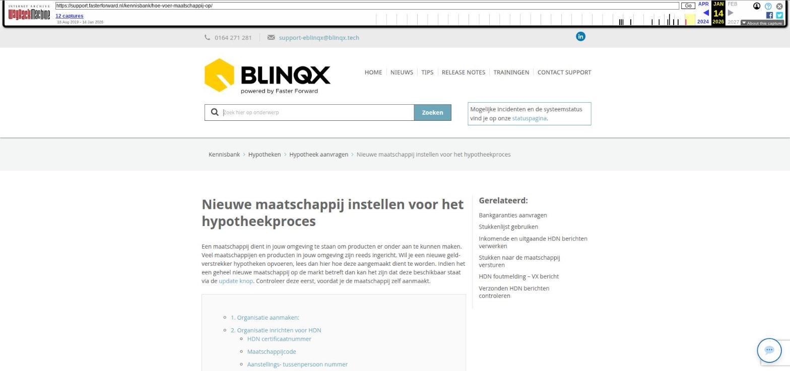

Nieuwe maatschappij instellen voor het hypotheekproces

Tekstinhoud
Nieuwe maatschappij instellen voor het hypotheekproces
Een maatschappij dient in jouw omgeving te staan om producten er onder aan te kunnen maken. Veel maatschappijen en producten in jouw omgeving zijn reeds ingericht. Wil je een nieuwe geldverstrekker hypotheken opvoeren, lees dan hier hoe deze aangemaakt dient te worden. Indien het een geheel nieuwe maatschappij op de markt betreft dan kan het zijn dat deze beschikbaar staat via de update knop. Controleer deze eerst, voordat je de maatschappij zelf aanmaakt.
1. Organisatie aanmaken:
2. Organisatie inrichten voor HDN
HDN certificaatnummer
Maatschappijcode
Aanstellings- tussenpersoon nummer
3. Producten
1. Organisatie aanmaken:
Allereerst dient er een organisatie aangemaakt te worden. Ga hiervoor naar Beheer – Organisatie & Personen. Controleer of de organisatie (maatschappij) reeds opgevoerd is. Je wilt niet dat er een verwarrende situatie ontstaat, doordat er bijvoorbeeld driemaal Florius in jouw omgeving staat. Indien de maatschappij erin staat, kan je op de naam van de maatschappij klikken om onderstaande zaken te controleren.
Indien de maatschappij er nog niet in staat klik dan links bovenin op het plus- symbool om een nieuwe organisatie aan te maken. Vul minimaal de naam van de maatschappij in het groene veld om de pop-up op te kunnen slaan.
Na het opslaan springt de pagina naar de organisatie, waar meerdere tabbladen beschikbaar zijn om aanvullende informatie in op te slaan. Je opent het tabblad 'detail' en vervolgens vink je "maatschappij" en "geldverstrekker" aan.
2. Organisatie inrichten voor HDN
Werkt de maatschappij ook met HDN? Vul dan ook direct het HDN certificaatnummer, HDN maatschappijcode en de aanstelling bij de maatschappij in.
HDN certificaatnummer
Het HDN certificaatnummer is terug te vinden op de website van HDN:
https://hdn.nl/over-ons/aangesloten-partijen/.
In eBlinqx voer je dit certificaatnummer op in het tabblad 'inventarisatie'. Klik daar op het plus- teken onder 'codes' en zet het type op 'HDN certificaatnummer'.
Maatschappijcode
Ook de maatschappijcode dient in het tabblad 'inventarisatie' opgevoerd te worden. Klik daar op het plus- teken onder 'codes' en kies type 'HDN maatschappijcode'. Hier lees je meer over waar je de maatschappijcode kunt vinden.
Aanstellings- tussenpersoon nummer
Het aanstellingsnummer (tussenpersoonsnummer) welke je bij deze maatschappij hebt, moet ingevuld worden onder het tabblad 'Aanstellingen'.
Klik daar op het plus teken:
Kies de deelnemer (is jouw eigen organisatie/kantoor)
type product
status: moet geaccepteerd zijn
huidig en nieuw aanstellingsnummer = Tussenpersoonsnummer
Datum: willekeurige datum vanuit het verleden
Let op! Het aanstellingsnummer dient per kantoor, per type product toegevoegd te worden.
Indien je géén rechtstreekse aanstelling hebt bij de maatschappij en de aanvraag via een service provider stuurt, kan je een '1' invullen als aanstellingsnummer onder de maatschappij (zie afbeelding).
3. Producten
Om vervolgens daadwerkelijk de maatschappij te kunnen selecteren bij het hypotheekproces dienen er tevens producten toegevoegd te zijn aan de maatschappij. Lees hier hoe producten toegevoegd kunnen worden aan een maatschappij.
Laatste update: 15 oktober 2025
Tagged: tussenpersoon
Was deze informatie nuttig?
Ja Nee